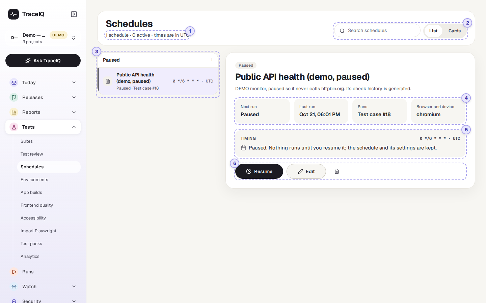
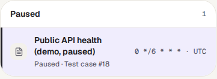
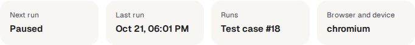
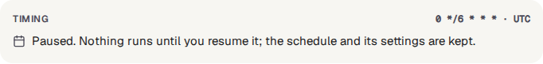
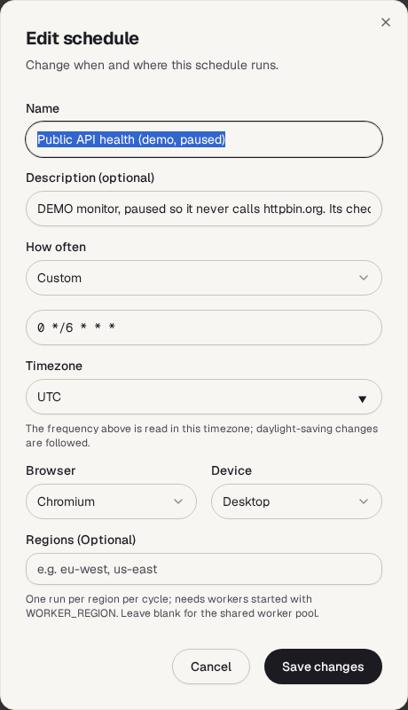

Schedules
A schedule runs a suite, or a single test, by itself at set times, for example every night at 2 a.m. This page lists the project's schedules, shows when each one runs next, and lets you pause, change or delete them.
What it is for
Tests are most useful when they run often, not only when someone remembers. A schedule answers "Is the site still working, even when nobody is looking?": the results of every scheduled run land on the Runs page like any other run, and the usual emails or chat messages go out.
Testers
Run the full regression suite every night, and start the day with the results.
Developers
Know that a problem introduced today will show up by tomorrow morning.
Leads
See at a glance what runs automatically, how often, and what has been paused.
Where to find it: in the sidebar, open Tests → Schedules. It shows the project selected at the top of the sidebar.
A tour of the screen
The list of schedules is on the left; the one you pick is shown on the right. The numbers on the screenshot match the sections below.

The counts line
Under the heading, for example "1 schedule · 0 active · times are in UTC": how many schedules the project has, and how many of them are running on their timer. (The "times are in UTC" part is misleading: see Good to know.)
Search and layout
The search box keeps only schedules whose name, description or timing contains what you type. List and Cards switch between the list-and-details view and a grid of cards with the same information and buttons. Both only appear once the project has a schedule.
The list

Schedules are boxed into Active and Paused. Each row shows the schedule's name, when it runs next (or "Paused"), what it runs, and its timing. The icon is a folder for a whole suite (or sub-module) and a page for a single test, in colour while active and grey while paused. Click a row to show it on the right.
The four facts

| Fact | What it tells you |
|---|---|
| Next run | When it will run next, in your own time zone. "Paused" while it is paused. |
| Last run | When it last started a run, in your own time zone. "Never" for a new schedule. |
| Runs | What it runs: Module #… for a suite or sub-module, Test case #… for a single test. Only the number is shown, not the name. |
| Browser and device | The one browser (and device, if not Desktop) every run of this schedule uses. |
Timing

The timing is a cron expression: five values that say at which minute,
hour, day of the month, month and day of the week to run. A * means "every".
A few examples:
| Cron expression | Runs |
|---|---|
0 0 * * * | Every day at midnight (the form's default). |
0 * * * * | Every hour, on the hour. |
0 */6 * * * | Every six hours: 00:00, 06:00, 12:00 and 18:00. |
0 9 * * 1 | Every Monday at 9 a.m. |
0 2 * * 1-5 | At 2 a.m. on weekdays (Monday to Friday). |
The times are read in the schedule's own timezone, shown next to the expression (for example Asia/Kolkata), and changes for summer time are followed.
Pause, Edit, Delete
- Pause stops new runs but keeps the schedule and its settings; a run that has already started carries on. On a paused schedule the button says Resume.
- Edit opens the schedule form (below). Nothing changes until you press Save changes.
- The bin deletes the schedule, after asking.

| Field | What to fill in |
|---|---|
| Name, Description | How the schedule is listed. New schedules start as "Schedule for suite name". |
| How often | Every hour, every day at midnight, every Monday at 9 a.m., every Friday at 5 p.m., or Custom to type your own cron expression. |
| Timezone | The time zone How often is read in. New schedules start with your browser's time zone. |
| Browser, Device | One browser (Chromium, Firefox or WebKit) and one device for every run. |
| Regions | Optional, for organisations with test machines in several places: one run per region each time. Leave empty unless your administrator has set regions up. |
Watch it in use
How to…
…run a suite every night
- Open the suite (Tests → Suites), press More, then Schedule this suite. For one test, press Schedule on the test instead.
- Under How often, choose Custom and type, for example,
0 2 * * *for 2 a.m. every day. - Check the Timezone, pick the browser, and press Create schedule.
- The schedule appears here under Active, with its next run.
…stop a schedule for a while
- Click it in the list and press Pause.
- When you want it back, press Resume. If its time came round while it was paused, it runs once within about a minute, then keeps to its timing again. Missed runs are not all made up.
…check that last night's run happened
- Look at Last run for the schedule.
- Open Runs in the sidebar to see the result. Scheduled runs are started in the name of the person who created the schedule.
Good to know
- Who can do what. Anyone with access to the project can look. Creating, pausing, editing and deleting schedules needs project admin (or workspace admin). The buttons are shown to everyone, but for others TraceIQ refuses the change with an error.
- Which time is which. Next run and Last run are shown in your browser's time zone; the cron expression is read in the schedule's own time zone. The line at the top says "times are in UTC", but that is not what the facts below it use.
- Up to a minute late. TraceIQ checks for due schedules once a minute, so a run can start up to about a minute after its time.
- One browser per schedule. A suite set to run on several browsers in its settings still runs on the one browser and device chosen in the schedule. Make one schedule per browser if you need several. Screen sizes and locales from the suite's settings are still applied.
- Missed runs aren't repeated. If TraceIQ was down at the scheduled time, it runs once when it is back and then carries on with the next regular time.
- Monitors appear here too. A monitor (see Watch → Monitors) is a schedule that checks a live site; it is listed here like the demo's "Public API health" and can be paused here.
- A schedule protects what it runs. A suite or test that a schedule uses can't be deleted until the schedule is deleted or changed.
- It doesn't update by itself. Reload the page to see a new Last run.
Related pages
Environments
The next page in this guide: where tests run, and the values and secrets they use.
Suites
Where schedules are created, with the Schedule buttons.
Monitors
Schedules that watch a live site and alert when it goes down.
Runs
The results of every scheduled run.